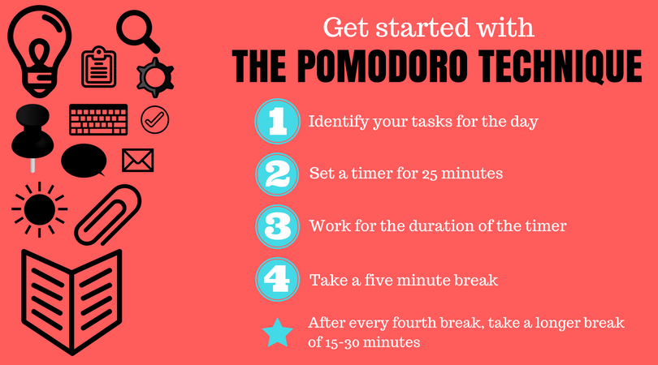
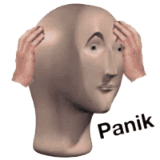

I know, I know. Exams are stressful and you would rather quit school than reading one of such millions of articles on the internet. This on, however is from a student's perspective and are hopefully feasable.
Take a break when you feel like it. I would have taken a break for the whole year, but that’s not possible and that’s not what I mean. If you aren’t able to concentrate, take a small break. You probably will ignore this bit of the paragraph but I would recommend to not watch or play anything digitally. This is because of the two following reasons, one being that you will be spoiling your eyes especially considering that nowadays we all study digitally. The other reason is that once you start watching or playing something, it will become hard for yu to be able to start studying again. Even if you do manage to persuade yourself to start studying, you will be distracted. You could instead go out cycling, exercise or just sleep.
 Try different ways of studying. There’s a method known as the Pomodoro technique (a series of doing work for some time, say 1 hour, and then take a break for some time, say 20 mins, again work for 1 hour, then take a longer break). You can change the duration of studying and breaks according to your taste. It’s quite effective for many out there. But that's just one technique. You could look up on the internet for other methods of studying. Point is, you need to find a technique that suites you best.
Don’t overstress yourself. Take some stress but don’t go off your rockers. Stress helps you keep going (that’s what I think, I’m definitely not a certified psychologist). Just a side note here, never, I repeat, never ever do group studies. Your friend might have studied something that you, and probably the entire class, didn't because it was not in the syllabus, thus if you do group studies you'll be stressing yourself enough to ruin yor upcoming exam.
Don’t compare yourself to others. This is the one I ask everyone to do. Many of my friends “notify” me of their progress (“Hi Tanmeen I’m going to study this week for math and next week for science. What about you?” even if the exam is a month away). I personally do get affected by this and I try my best to stay away from group chats and group studies. What happens is that I see how much ‘extra’ my peers have done and I feel unprepared.
Stay kalm. Even if you don’t get what you expected, there’s always 150 other exams ahead of you.